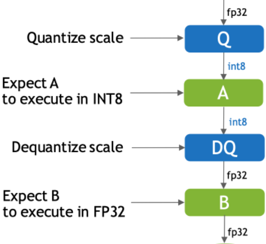
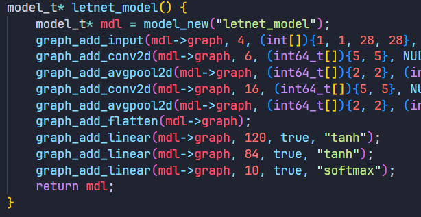
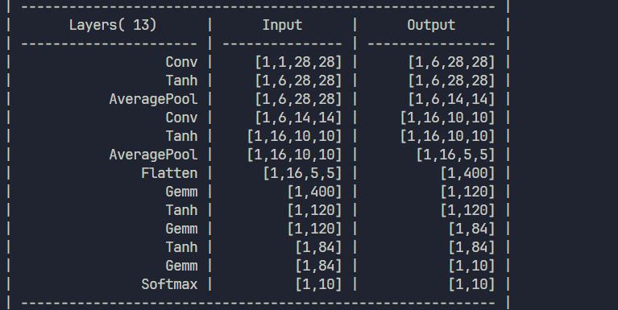
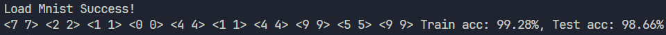

05 推理模型量化与设计
作者：鲁天硕
时间：2024/9/22
Why 量化?
对模型的参数（即内置在模型文件里的张量数据）进行量化压缩，在推理侧的主要目的： 1. 减小模型参数大小，从而减小运行时内存占用、传输时间； 2. 加快推理速度，相对于高位宽数据计算，低位宽计算普遍较快（又称：低比特量化）； 3. 保持计算精度，选择合适的量化方法保证模型输出质量。
量化的挑战
量化技术主要有如下挑战： 1. 精度：任务越复杂，模型越小，精度损失越大 2. 硬件：不同硬件低比特量化后计算的指令、方式、以及支持度不同 3. 软件：模型参数量小不代表内存占用少（某些激活函数如 Swish、GELU 和残差连接需要额外的内存来存储中间结果），混合精度模型需要量化以及反量化（Cast算子性能问题）
注意：是否可以量化还是和模型与数据有关！！！
常见量化方案
- 量化训练（Quant Aware Training, QAT）：训练时尝试量化，finetune 降低误差。
- 动态离线量化（Post Training Quantization Dynamic, PTQ Dynamic）：直接将部分（混精）或全部算子的参数从 Float32 转换为 Int8/16。
- 静态离线量化（Post Training Quantization Static, PTQ Static）：使用无标签数据校准，采用 KL 散度计算量化比例因子
scale。
注意：推理引擎的量化方案以后两种为主：即输入一个模型，输出一个量化后模型。

量化方案对比1
| 量化方法 | 功能 | 适用场景 | 使用条件 | 易用性 | 精度损失 | 预期收益 |
|---|---|---|---|---|---|---|
| 量化感知训练 (QAT) | 通过在训练过程中对模型进行量化优化 | 对精度敏感的场景，适用于日标检测、OCR等 | 需要重新训练模型 | 中等 | 较小 | 减少内存占用达4X，降低计算开销 |
| 静态后量化 (PTQ Static) | 在模型部署前量化模型，提前收集代表性数据 | 不太敏感的场景，主要应用于图像分类任务 | 需要少量校准数据 | 简单 | 中等 | 减少内存占用达4X，降低计算开销 |
量化方案对比2
| 量化方法 | 功能 | 适用场景 | 使用条件 | 易用性 | 精度损失 | 预期收益 |
|---|---|---|---|---|---|---|
| 动态后量化 (PTQ Dynamic) | 在推理时量化模型，访问权重时量化以减少存储和计算开销 | 模型在运行中的动态任务，如 BERT 等大模型 | 无需校准数据 | 最简单 | 较大 | 减少内存占用达2/4X，降低计算开销 |
| 混合精度量化 | 部分参数保持高精度，其他部分进行低精度量化 | 高性能设备或部分精度敏感的应用场景 | 需要硬件支持 | 中等 | 较小 | 提高推理速度，减少部分内存占用 |
量化方案对比3
| 量化方法 | 功能 | 适用场景 | 使用条件 | 易用性 | 精度损失 | 预期收益 |
|---|---|---|---|---|---|---|
| 自适应量化 | 基于任务或输入数据动态调整模型的量化参数 | 动态变化的推理场景，适用于视频流、时序数据 | 需要动态调度算法支持 | 中等 | 最小 | 灵活控制精度损失和计算效率 |
| 分组剪枝量化 | 基于模型结构的稀疏性，进行分块剪枝后结合量化 | 大模型剪枝后推理优化，适合稀疏性高的模型 | 需要结构化剪枝模型 | 较复杂 | 较小 | 降低存储空间与计算开销 |
引擎进度
- 已支持大部分算子推理（师兄的模型就差三线性插值），支持 LetNet 模型搭建及训练（Mnist TEST任务通过，10000 个样本 ACC: 98.66%）
- 下一步：尝试部分算子的 CUDA 加速（如：
Gemm，三线性插值），完善.etm (Evo Tiny Model)模型的量化以及保存的 API。



问题
- 动机：三线性插值是否应该作为 ONNX 算子使用？实际上它和双线性插值是平行关系，都隶属于
Onnx Resize下；且 ONNX 不同算子之间无法复用，导致代码量增大。同时 BLAS 作为一种运算库标准被大量深度学习项目使用； - 问题：目前的 ONNX 这层是面向模型的算子，是否需要加入中间层 BLAS（Basic Linear Algebra Subprograms）用于硬件加速计算？（目前来看：CUDA：cudaNN > cuBlas，Matlab, TensorFlow, Pytorch: OpenBlas）
- 区别：ONNX 算子输入输出为
tensor，粒度较大，不同算子之间不能互相调用（不便于硬件优化）；BLAS 算子输入输出为 C 语言基本类型，可互相调用，也可被 ONNX 算子调用（例如：sgemm可用于 ONNX 的Gemm,MatMul），粒度较小； - 优点：模型无关，更底层，可复用于 ONNX 算子，便于硬件优化。
- 缺点：如果要实现全部 BLAS 标准太复杂，运算时并不需要所有 BLAS 标准函数。
BLAS dgemm API
void cblas_dgemm
(
const CBLAS_LAYOUT Layout,
const CBLAS_TRANSPOSE transa,
const CBLAS_TRANSPOSE transb,
const CBLAS_INT m,
const CBLAS_INT n,
const CBLAS_INT k,
const double alpha,
const double *a,
const CBLAS_INT lda,
const double *b,
const CBLAS_INT ldb,
const double beta,
double *c,
const CBLAS_INT ldc
);
API 较为复杂，可简化。
参考文献
[1] AI推理引擎——离线压缩 [2] 感知量化训练 [3] TensoRT量化第四课：PTQ与QAT